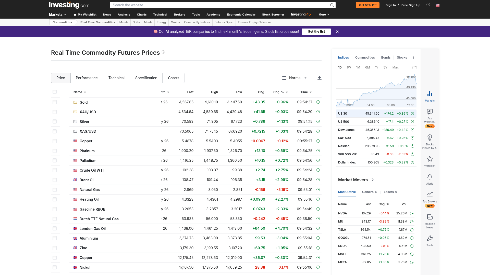
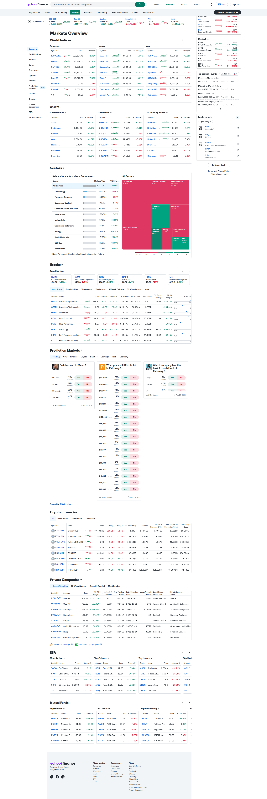
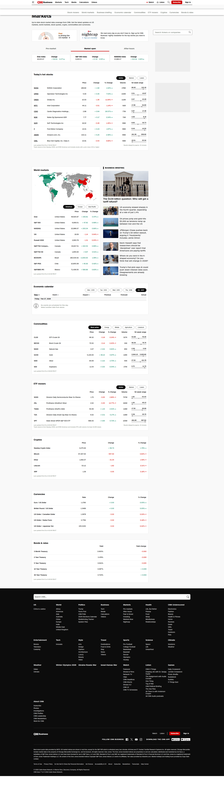

🎨 Design Improvement: Gasoline World
Анализ на основе 250 000+ скриншотов реальных приложений · Lazyweb · 2026-05-10
TL;DR: Три изменения с максимальным эффектом: sparklines на карточках стран, ценовой бар относительного позиционирования и апгрейд шапки статистики — превратят добротный дашборд в топовый финансовый инструмент.
💡 Идеи улучшений
1. Sparklines на карточках стран
В каждую карточку страны и строку таблицы добавить маленький sparkline-график (60×24px) рядом с ценой. Данные уже есть в forecast.js — 24-месячный прогноз для каждой страны.


Почему это работает: Цена без тренда — просто число. Sparkline за 2 секунды отвечает на вопрос "куда движется?" без лишних кликов.
┌──────────────────────────────────────┐ │ 🇩🇪 Германия Европа │ │ │ │ $1.82 /л ╱╲ ↑ +2.1% │ │ ╱ ╲╱ [sparkline 8w] │ │ │ │ [⚡ В калькуляторе] [🔔] │ └──────────────────────────────────────┘
2. Ценовой бар относительного положения
Под ценой на каждой карточке — тонкая горизонтальная полоса (4px), показывающая где страна находится в мировом диапазоне (от самой дешёвой до самой дорогой).

Почему это работает: Пользователь мгновенно видит "эта страна в дешёвой трети" — без сортировки и сравнения чисел вручную.
┌──────────────────────────────────────┐ │ 🇩🇪 Германия │ │ $1.82 /л │ │ │ │ Дёшево ██████████████░░░░ Дорого │ │ ▲ (позиция в мировом ряду) │ └──────────────────────────────────────┘
3. Live-тикер вместо статичных стат-карточек
Заменить 4 статичные карточки статистики на горизонтальный тикер-бар. Добавить цветные дельта-стрелки (↑ ↓) показывающие изменение относительно прошлого периода.


Почему это работает: Тикер занимает меньше места, чем 4 карточки, но воспринимается как "живой" — сразу создаёт ощущение реального финансового инструмента.
┌──────────────────────────────────────────────────────┐ │ ⬇ Дешевле: Венесуэла $0.025 | ≈ Среднее: $1.24 │ │ ⬆ Дороже: Норвегия $2.31 | 🌍 187 стран │ └──────────────────────────────────────────────────────┘
4. Градиентный choropleth вместо трёх цветов
Заменить 3 фиксированных цвета на карте ($0.50/$1.50 пороги) на плавный градиент зелёный→красный, вычисляемый динамически по реальному диапазону данных.

Почему это работает: 3 цвета теряют нюансы — Германия ($1.82) и Норвегия ($2.31) выглядят одинаково красными, хотя разница 27%. Градиент передаёт относительность мгновенно.
Легенда: $0.02 ──────────────────── $2.40
🟢 зелёный → 🟡 жёлтый → 🔴 красный
5. Расширенный тултип на карте
При наведении на страну — не просто название+цена, а мини-попап: флаг, цена бензина, цена дизеля, кнопка "В калькулятор". Избавляет от необходимости скроллить вниз после клика.
┌─────────────────────────┐
│ 🇩🇪 Германия • Европа │
│ ⛽ Бензин: $1.82/л │
│ 🛢 Дизель: $1.71/л │
│ [⚡ В калькулятор →] │
└─────────────────────────┘
✅ Что уже работает хорошо
- Цветовое кодирование цен (зелёный / янтарный / красный) — интуитивно понятно с первого взгляда
- Двойной режим отображения (карточки + таблица) — правильное решение для разных сценариев
- Шрифтовая пара Bebas Neue + JetBrains Mono создаёт отличный технический характер
- Тёмная тема с оранжевым акцентом — профессионально и уместно для финансового инструмента
- Калькулятор — killer feature, хорошо интегрирован с картой
📚 Все референсы
| Файл | Источник | Применено |
|---|---|---|
| investing-sparklines.png | Investing.com Lazyweb | Идея #1 — sparklines |
| opensea-table-sparklines.png | OpenSea Lazyweb | Идея #1 — sparklines в таблице |
| phantom-market-table.png | Phantom Lazyweb | Идея #2 — ценовой бар |
| yahoo-finance-dashboard.png | Yahoo Finance Lazyweb | Идея #3 — тикер статистики |
| cnn-world-markets.png | CNN Markets Lazyweb | Идея #3 — live stats bar |
| kpler-commodity-map.png | Kpler Lazyweb | Идея #4 — градиент карты |